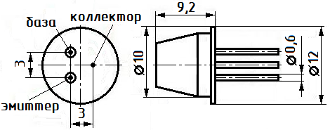

Транзистор ГТ403(А-И)
Транзисторы ГТ403 германиевые сплавные структуры p-n-p усилительные. Предназначены для применения в переключающих устройствах, выходных каскадах усилителей низкой частоты, преобразователях и стабилизаторах постоянного тока.
Выпускаются в металлостеклянном корпусе с гибкими выводами. Тип прибора указывается на корпусе.
Масса транзистора не более 4 г.

Характеристики транзисторов ГТ403
Таблица 1
| Тип транзистора |
Iк макс | Iк и | Uкэ0 макс | Uкб0 max | Uэб0 max | [1]Рк макс |
|---|---|---|---|---|---|---|
| А | А | В | В | В | Вт | |
| ГТ403А | 1,25 | - | 30 | 45 | 20 | 4 |
| ГТ403Б | 1,25 | - | 30 | 45 | 20 | 4 |
| ГТ403В | 1,25 | - | 45 | 60 | 20 | 5 |
| ГТ403Г | 1,25 | - | 45 | 60 | 20 | 4 |
| ГТ403Д | 1,25 | - | 45 | 60 | 30 | 4 |
| ГТ403Е | 1,25 | - | 45 | 60 | 20 | 5 |
| ГТ403Ж | 1,25 | - | 60 | 80 | 20 | 4 |
| ГТ403И | 1,25 | - | 60 | 80 | 20 | 4 |
[1] - с теплоотводом
Таблица 2
| Тип транзистора |
h21э | Uкэ нас | Iкбо | Iэбо | fгр | Кш | Ск | Сэ | Тп max | Тmax |
|---|---|---|---|---|---|---|---|---|---|---|
| В | мкА | мкА | кГц | дБ | пФ | пФ | °С | °С | ||
| ГТ403А | 20...60 | 0,5 | 50 | 50 | 8 | - | - | - | 85 | -55…+70 |
| ГТ403Б | 50...150 | 0,5 | 50 | 50 | 8 | - | - | - | 85 | -55…+70 |
| ГТ403В | 20...60 | 0,5 | 50 | 50 | 8 | - | - | - | 85 | -55…+70 |
| ГТ403Г | 50...150 | 0,5 | 50 | 50 | 8 | - | - | - | 85 | -55…+70 |
| ГТ403Д | 50...150 | 0,5 | 50 | 50 | 8 | - | - | - | 85 | -55…+70 |
| ГТ403Е | >30 | 0,5 | 50 | 50 | 8 | - | - | - | 85 | -55…+70 |
| ГТ403Ж | 20...60 | 0,5 | 70 | 70 | 8 | - | - | - | 85 | -55…+70 |
| ГТ403И | >30 | 0,5 | 70 | 70 | 8 | - | - | - | 85 | -55…+70 |
Сопротивление насыщения между коллектором и эмиттером Rкэ нас - не более 1 Ом;
Коэффициент шума транзистора: не нормируется.